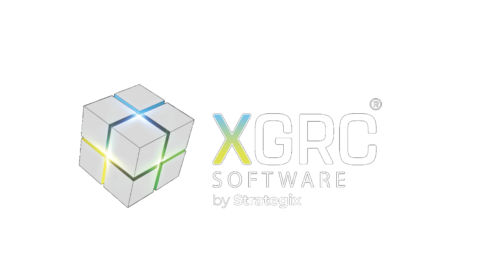

Security & Trust Overview · Version 3.0
How we protect the records you are audited on
Security, privacy and resilience of the XGRC® platform: the answers procurement, security and legal teams need before they buy.
ISO/IEC 27001:2022Certified by BSI, certificate IS 804839
72 hoursBreach notification commitment
RPO 1h · RTO 4hRecovery objectives, tested quarterly
AES-256At rest, with per-customer keys